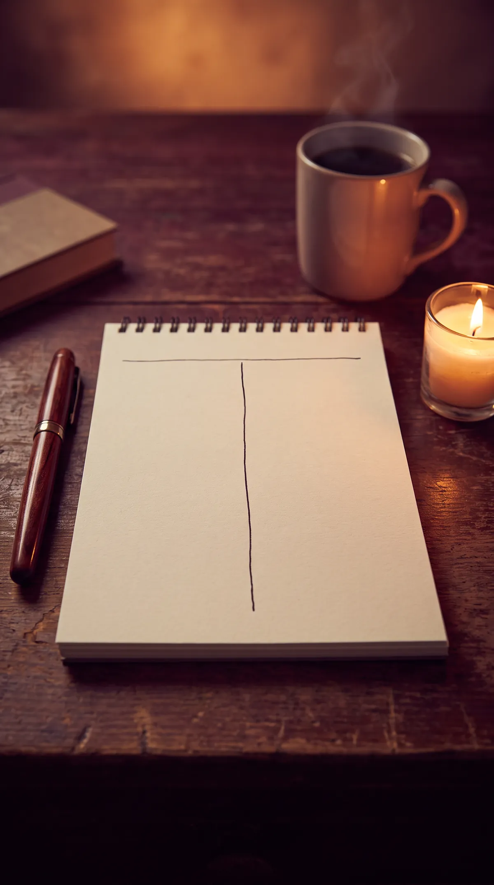

Vielleicht hat er es gesagt: „Lass uns Freunde bleiben." Vielleicht warst du es selbst, weil du den Gedanken nicht ertragen hast, ihn ganz zu verlieren.
Auf dem Papier klingt es erwachsen. Kein Drama, kein Kontaktabbruch, man mag sich doch. Und trotzdem sitzt du nach jedem Kaffee mit ihm zwei Tage lang neben dir. Du lachst mit ihm, und zu Hause weinst du.
Wenn du dich fragst, ob diese Freundschaft dir guttut, ist die Frage schon ein Hinweis. Schauen wir ehrlich hin.
Geht Freundschaft nach einer Liebe überhaupt?
Ja, manchmal. Aber fast nie sofort und fast nie unter denselben Bedingungen wie vorher.
Freundschaft funktioniert, wenn beide ungefähr dasselbe wollen. Nach einer Trennung ist das selten so. Meist ist einer schon weiter und der andere hofft noch. Und wer hofft, erlebt keine Freundschaft. Er erlebt eine Warteschleife mit freundlichem Etikett.
Dein System unterscheidet dabei ziemlich genau. Wenn du nach einem Treffen leichter bist, wie nach einem Abend mit einer guten Freundin, dann kann da tatsächlich etwas Neues entstehen. Wenn du nach einem Treffen stundenlang analysierst, was er gemeint hat, dann ist die Liebe noch da. Sie hat nur einen neuen Namen bekommen.
Warum halte ich so an der Freundschaft fest?
Weil sie dir erlaubt, die Tür einen Spalt offen zu lassen.
Ein ganzer Abschied fühlt sich endgültig an. Die Freundschaft verspricht: Du musst ihn gar nicht verlieren. Und irgendwo, ganz leise, sitzt oft noch ein zweiter Gedanke: Wenn ich nah bleibe, merkt er vielleicht irgendwann, was er an mir hat.
Das ist menschlich und das verurteile ich nicht. Es kostet dich nur viel. Denn solange die Tür einen Spalt offen ist, zieht es. Du kannst dich nicht ganz neu ausrichten, weil ein Teil von dir immer im Türrahmen steht.
Erklären heißt nicht entschuldigen. Du darfst verstehen, warum du festhältst. Und du darfst trotzdem ehrlich prüfen, ob es dir dient.

Woran erkenne ich, ob die Freundschaft mir guttut?
Mach nach dem nächsten Kontakt mit ihm den Drei-Fragen-Test. Setz dich hin, ohne Handy, und beantworte schriftlich:
Der Drei-Fragen-Test — nach drei Kontakten mit ihm
Wie fühle ich mich eine Stunde danach? Leichter, genauso wie vorher oder schwerer?
Was habe ich mir von diesem Treffen erhofft? Schreib es ehrlich auf, auch wenn der Satz dir peinlich ist.
Wie würde es mir gehen, wenn er mir morgen von einer neuen Frau erzählt? Spür in den Körper, nicht in den Kopf. Wird der Bauch eng?
Mach das dreimal, nach drei Kontakten. Wenn die Antworten jedes Mal „schwerer", „dass er es sich anders überlegt" und „das würde mich zerreißen" lauten, dann ist das keine Freundschaft. Dann ist es eine Bindung, die gerade Pause machen darf.
Heißt das, ich muss den Kontakt abbrechen?
Nicht für immer. Aber oft für eine Zeit.
Eine ehrliche Pause ist kein Krieg und keine Strafe. Du kannst sie freundlich aussprechen: „Ich brauche gerade Abstand, damit ich wirklich eine Freundin sein kann. Ich melde mich, wenn es so weit ist." Viele echte Freundschaften zwischen früheren Paaren sind genau so entstanden: nach einer Pause, in der beide bei sich angekommen sind.
Dein nächster Schritt: die Loslass-Analyse
Wenn du nicht sicher bist, ob du loslässt oder festhältst, dann hilft ein klarer Blick von außen: Die Loslass-Analyse. In etwa 20 Minuten bekommst du eine Auswertung, was dich an ihn bindet, was sich schon bewegt hat und wo dein nächster Schritt liegt.
Zur Loslass-AnalyseHäufige Fragen
Wie lange sollte die Pause dauern?
Es gibt keine feste Zahl. Ein guter Anhaltspunkt: bis du von einer neuen Partnerin an seiner Seite hören kannst, ohne dass es dich den ganzen Tag beschäftigt.
Was, wenn wir einen gemeinsamen Freundeskreis haben?
Dann geht es nicht um Unsichtbarkeit, sondern um Nähe. Ihr könnt beide beim selben Geburtstag sein. Was du pausierst, sind die Zweiertreffen, die langen Nachrichten und die nächtlichen Telefonate.
Bin ich unreif, wenn ich keine Freundschaft schaffe?
Nein. Es ist reif, ehrlich zu sagen, was dir guttut. Unreif wäre, dir selbst etwas vorzuspielen, nur damit es nach außen gelassen aussieht.
Von Herzen, Susanne